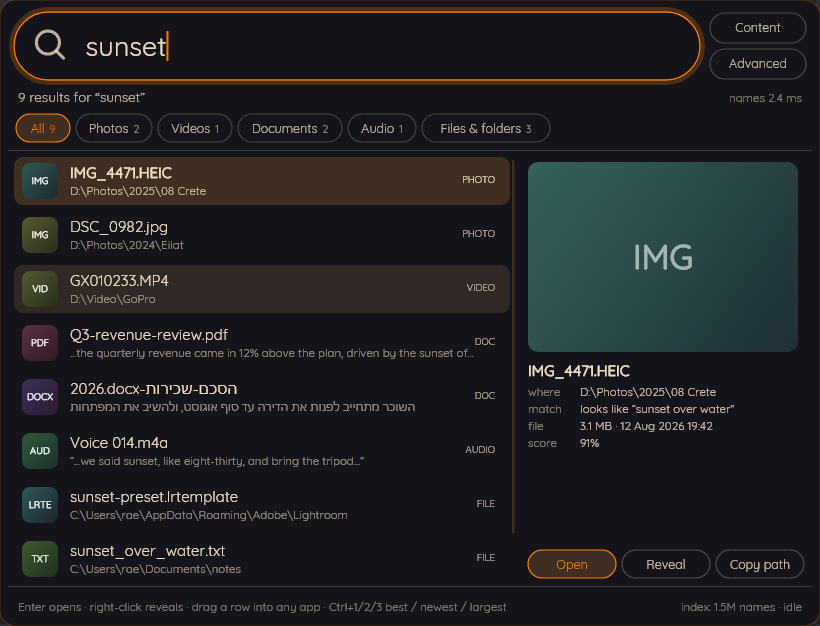
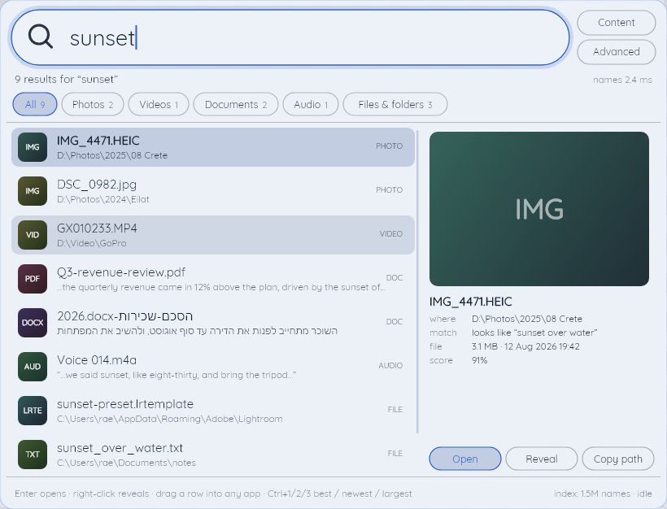
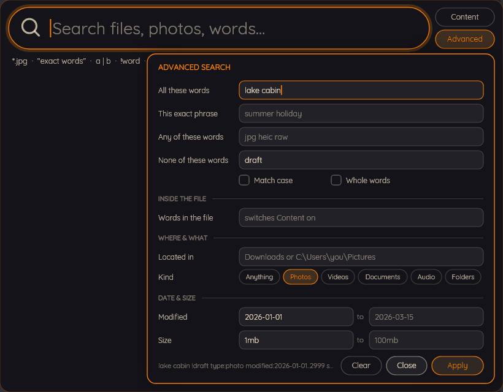
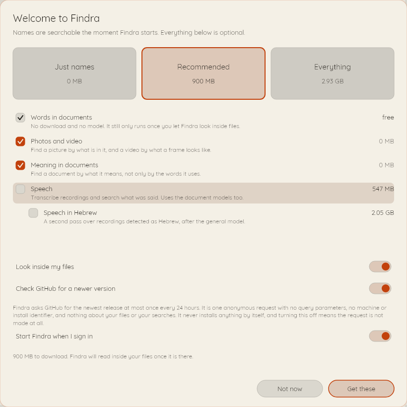
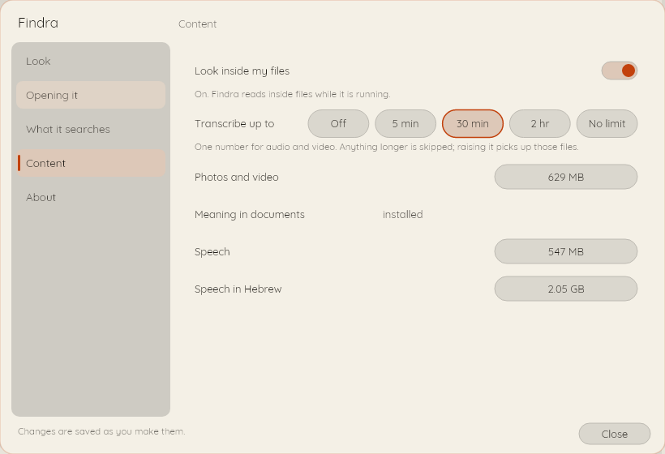

The index had not got to it
You saved the file. The indexer runs at 3 AM. Until then, as far as Windows is concerned, you did not.
Findra: names are live, alwaysYou bought a drive that reads seven thousand megabytes a second. Windows uses it to think about your question for four minutes, freeze a folder you were not looking in, find nothing, and then gently suggest that the internet might know where you keep your own tax return.
Findra holds the file table in RAM and answers before your finger comes off Enter. Half a millisecond, measured, on a disk with 1.5 million files on it.
Windows kept meticulous records of everything except where your file was.
You saved the file. The indexer runs at 3 AM. Until then, as far as Windows is concerned, you did not.
Findra: names are live, alwaysThere is a settings page listing which of your own drives Windows is willing to look at. Nobody has ever found it twice.
Findra: every NTFS volumeNot what you called the file. Windows would like the filename, please, and would prefer you had it memorised.
Findra: inside documents tooYou typed a private filename into a box on your own computer and something went over the wire about it.
Findra: nothing leavesNames cost seconds to index and about 73 MB of memory, so they are on from the moment Findra starts. Reading inside files walks every drive and can run for hours, so it never begins on its own. You turn it on, one capability at a time, and each one is a separate download you can decline.
| What you can search for | Needs a model | On by default |
|---|---|---|
| Names of files and folders, across every NTFS volume | no | yes, the moment Findra starts |
| Words in documents, and the text inside pictures | no | no, until you turn content indexing on |
| Photos and video, by what is in the frame | yes | no |
| Documents by what they mean, not only the words they use | yes | no |
| Speech in recordings, with a second pass for Hebrew | yes | no |
Everything Findra can install adds up to 2.93 GB, and that is the figure only if you take all of it. Take none and it still searches every name on the machine. Sizes on screen are marginal, counted against what you have already picked, because Speech and Meaning share files and you are never charged twice for the same download.
Each one was drawn by the same painter the window uses, with the command printed underneath it. Run the command, get the image.

Nine results for "sunset": files by name, documents by their contents, and a photograph matched on what is actually in the frame.
findra --searchshot results.png results Mond
It sits on the desktop doing nothing until you click it, or press the hotkey from wherever you happen to be.
findra --searchshot capsule.png capsule Mond

Pick one of each and Findra follows the Windows setting, or pin it to either. Your own go in palettes.json.
findra --searchshot light.png results Blueprint

Typing has a syntax. There is a form for the parts of it nobody remembers, and it writes the query for you.
findra --searchshot advanced.png adv Mond

Take a preset, take one capability, or take nothing at all. Nothing on this screen is permanent.
findra --searchshot firstrun.png firstrun Paper

One number, in minutes, decides how long a recording is worth transcribing. Turning content indexing off later throws away nothing already read, and turning a capability on re-reads only the files that capability covers.
findra --searchshot settings.png settingscontent Paper
Everything below came out of findra --searchbench
and was pasted without editing. No number appears on this page that you cannot reproduce
on your own computer with one command.
| Name query | Round trip p50 | Round trip p95 | Index scan p50 | Worst | Hits |
|---|---|---|---|---|---|
| config | 0.50 ms | 0.54 ms | 0.06 ms | 0.56 ms | 50 |
| report | 0.54 ms | 0.61 ms | 0.16 ms | 1.31 ms | 50 |
| readme | 1.00 ms | 1.06 ms | 0.51 ms | 1.33 ms | 50 |
| invoice | 2.53 ms | 5.04 ms | 2.13 ms | 5.42 ms | 45 |
| sunset | 3.99 ms | 4.43 ms | 3.55 ms | 5.20 ms | 35 |
A number without its machine is marketing rather than measurement, so the machine is named.
Yours will differ. Findra tries DirectML for the vision and meaning models and Vulkan for
speech, and falls back to the processor when neither answers, which is a supported
configuration rather than a failure: only the first pass through your files is slower, and
findra --searchmodels
prints which provider it chose and every one it turned down, with reasons.
There is no account, no cloud service, no analytics, no crash reporting and no telemetry. The models run on your own processor or graphics card; a photograph is never uploaded to be understood.
Once every 24 hours, on startup, in the background, Findra makes an anonymous HTTPS GET to the GitHub releases API to learn whether a newer version exists. No query parameters, no machine identifier, no install identifier, nothing about your files or your searches.
It never blocks anything, a failure is a line in the log rather than a dialog, it is disclosed on the first-run screen, and you can switch it off. Off means the request is not made at all.
Findra never installs an update by itself. Replacing a running executable and re-registering an elevated task are the two operations most likely to leave a machine broken, and it declines to do either behind your back.
Findra is at version 0.1.0 and the first release has not been tagged yet, so building it yourself is the route that works today. It needs the .NET 10 SDK and nothing else.
Four commands, and you have a self-contained build. The tests run on your machine too.
Name search needs the helper, which asks for administrator rights exactly once, to open the volume. Nothing else in Findra ever needs them, and the part that reads your files deliberately runs without them.
The installer is written and the winget manifests are already in the repository, for both x64 and arm64. When the first release is tagged, this is the whole install.
Neither the installer nor the executables are signed yet, so Windows will warn about an unknown publisher until that changes.
Uninstalling always removes the elevated logon task, because a scheduled task pointing at a binary that is no longer there is a defect and not an inconvenience. It keeps your models, your index and your settings unless you say otherwise, and tells you the measured size it would free before it deletes anything.
Names in half a millisecond from the moment you sign in. Documents, photos and speech when you ask for them, and not a second sooner. No account, no telemetry, no 3 AM index rebuild, and a licence that lets you take the whole thing apart.